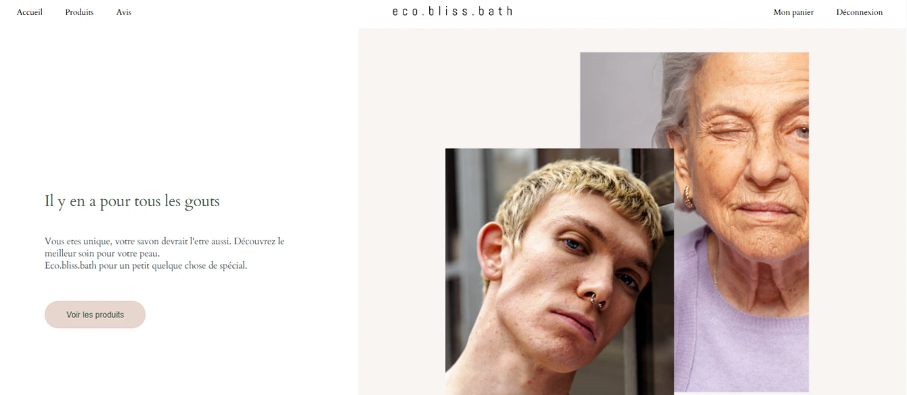

Tests UI & API d’un site e-commerce en développement
Automatiser les tests les plus critiques du site EcoBlissBath grâce à Cypress. Le projet avait pour but de vérifier la stabilité de la V1 du site, d’améliorer la couverture de tests et de renforcer la qualité du produit avant son déploiement.
Analyse des tests manuels existants, reproduction des scénarios critiques puis automatisation des tests UI et API avec Cypress.
• Récupération du projet GitHub,
• Installation de Cypress,
• Analyse du bilan de test manuel fourni par Marie,
• Compréhension des recommandations de Fabio,
Tests automatisés pour les 6 endpoints principaux :
• GET : récupération des produits et catégories,
• POST : création d’un produit,
• PUT : mise à jour,
• DELETE : suppression,
• Gestion des erreurs (404, 500…),
• Chargement des listes de produits,
• Navigation entre les pages,
• Ajout d’un produit au panier,
• Vérification du comportement des boutons et éléments interactifs,
• Smoke tests pour vérifier les éléments critiques,
Les tests automatisés ont permis d'améliorer la couverture, de détecter plusieurs anomalies et d'obtenir une validation fiable du comportement du site. Un bilan structuré a été rédigé, incluant les objectifs, les tests, les résultats et les rapports d'anomalies.
Configuration complète d’un projet Cypress, écriture de tests avancés (intercepts, fixtures), analyse d’anomalies et rédaction de rapports professionnels. Amélioration de ma compréhension des API REST, de la qualité logicielle et du rôle QA dans un projet e-commerce réel.
Voir le code source du projet sur GitHub